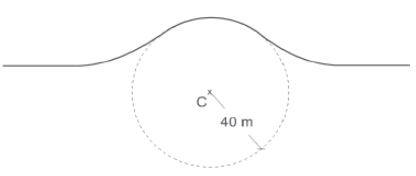
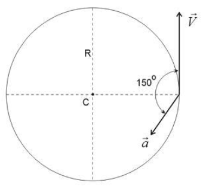
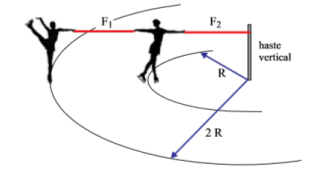
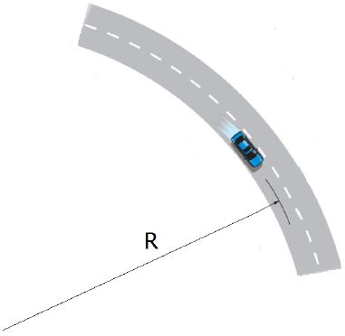

A força resultante que atua sobre a criança
|
a) é nula. b) é oblíqua a velocidade do carrossel. c) paralela a velocidade do carrossel. |
d) esta direcionada para fora do brinquedo. e) esta direcionada para o centro do brinquedo. |

Se a ambulância passar pelo topo da lombada com uma velocidade muito elevada, pode perder o contato com a estrada e o impacto que irá ocorrer quando os pneus voltarem a tocar o piso provocará um solavanco que não fará bem ao paciente.
Considerando g = 10 m/s2, o valor máximo da velocidade com que a ambulância pode passar pelo topo da lombada sem perder o contato com a estrada é de
|
a) 72 km/h. b) 74 km/h. |
c) 78 km/h. d) 80 km/h. |
e) 84 km/h. |
a) |
[ ] Período é o intervalo de tempo que um móvel gasta para efetuar uma volta completa. |
b) |
[ ] A frequência de rotação é dada pelo número de voltas que um móvel efetua por unidade de tempo. |
c) |
[ ] A distância que um móvel em movimento circular uniforme percorre ao efetuar uma volta completa é diretamente proporcional ao raio de sua trajetória. |
d) |
[ ] Quando um móvel efetua um movimento circular uniforme, sobre ele atua uma força centrípeta, a qual é responsável pela mudança na direção da velocidade do móvel. |
e) |
[ ] O módulo da aceleração centrípeta é diretamente proporcional ao raio de sua trajetória. |

O vetorforma um ângulo de 150° com o vetor
. Sendo v = 12 m/s e a = 8 m/s2, o raio R do círculo mede:
|
a) 18 m. b) 24 m. |
c) 36 m. d) 48 m. |
e) 72 m. |

Considerando as informações indicadas na figura, que o módulo da força de tração na fita F1 é igual a 120 N e desprezando o atrito e a resistência do ar, é correto afirmar que o módulo da força de tração, em newtons, na fita F2 é igual a
|
a) 120. b) 240. |
c) 60. d) 210. |
e) 180. |
Devido à alta velocidade, um dos problemas a ser enfrentado na escolha do trajeto que será percorrido pelo trem é o dimensionamento das curvas. Considerando-se que uma aceleração lateral confortável para os passageiros e segura para o trem seja de 0,1 g, em que g é a aceleração da gravidade (considerada igual a 10 m/s2), e que a velocidade do trem se mantenha constante em todo o percurso, seria correto prever que as curvas existentes no trajeto deveriam ter raio de curvatura mínimo de, aproximadamente,
|
a) 80 m. b) 430 m. |
c) 800 m. d) 1'600 m. |
e) 6'400 m. |
a) a aceleração da pedra varia e a criança gira com aceleração nula.
b) a pedra cai com aceleração nula e a criança gira com aceleração constante.
c) a aceleração em ambas é zero.
d) ambas sofrem acelerações de módulos constantes.
|
a) 100 N. b) 120 N. |
c) 140 N. d) 160 N. |
e) 180 N. |

Assinale a alternativa que preenche corretamente as lacunas do enunciado abaixo, na ordem em que aparecem.
A força resultante sobre o automóvel é ........ e, portanto, o trabalho por ela realizado é ........ .
a) nula – nulo.
b) perpendicular ao vetor velocidade – nulo.
c) paralela ao vetor velocidade – nulo.
d) perpendicular ao vetor velocidade – positivo.
e) paralela ao vetor velocidade – positivo.